To complete the initiation of a civil file, you must enter the
initiating document. CEIS automatically assigns it a "sequence number".
The initiating document will be the first number; any documents you
assign after file initiation will be numbered "two", "three", and so on.
This makes it easier to track all the documents within a file.
To add an initiating document to the file, click Add
Document at the bottom of the Party Details
screen.
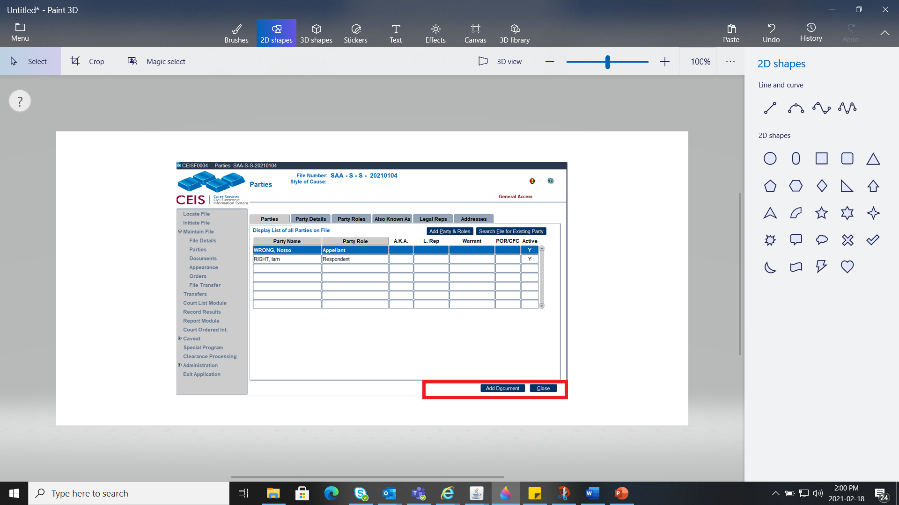
To add a Document to an existing file, click Add
Document at the top right side of the Document
Summary screen.
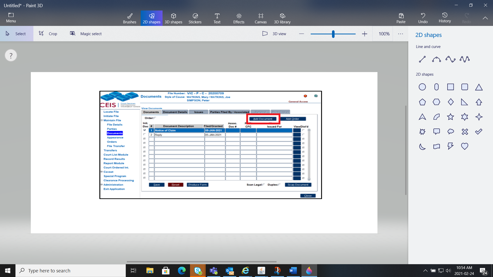
NOTE – All mandatory fields have and asterisk (*) beside
them
Initiating Document (1):
By default, this checkbox is ticked if this is the first document
being added to the file.
Filed By (2):
Select if the document was filed by counsel, a self-represented
party, or the registry (if it was an internally generated document.)
From CSO (3):
This checkbox will be ticked if this document was e-filed via Court
Services Online.
Scan (4):
This checkbox will be ticked if this document is scanned into
CEIS.
Large File (5):
This checkbox will be ticked if CEIS has indicated this this is a
large document.
Associated Document Ref # (6):
This selection is used to associate one document to another. For
example, if a document is amended, you would associate it to the
original.
Document Type (7):
Select the appropriate document alpha code from the drop-down list,
and the full document description will appear. For a list of the CEIS
Codes, click here.
Appendix (8):
On select documents, an Appendix button will appear, when it does it
is a mandatory field. Appendix information can usually be found on the
last page of the document.
Date Filed/Granted (9):
The date the document was filed.
Est. Days (10):
The estimated number of days required to hear the case (rounded off
to a whole number).
Claim Amount (11):
For Supreme Civil and Small Claims, enter the amount of claim
excluding costs.
Act (12):
Select the appropriate act(s) from the drop-down list. The Act is
mandatory for initiating documents in the following classes: Adoption,
Family Law Proceedings, Legislated Statutes and Provincial Family. Up to
three Acts can be entered against one document.
Document Access (13):
Identifies any access restrictions for the document. This field
defaults to GEN, based on the access level of the file.
Statutory Filing Fee (14):
If there is a standard fee involved
Grounds for Divorce (14):
Located under Statutory Filing Fee in Supreme Court Family Files
(Divorce) only. This field is not mandatory but the grounds must be
entered for all divorce files.
Comment (15):
Use this field for any general comments about the document.
Delete Act (16):
Highlight the entered act using the blue line if you need to remove
an Act from the Act field.
Update the Address for Service for the party
to the counsel’s address.
Change of Address
If a party needs to update their address, they will file this
document, then you should:
Data enter the document,
Go to the Party Address tab and end the previously entered address,
and
ADD a new Address for the party.
Parenting Education/Dispute resolution
Some Locations require a Parenting Education Certificate to be filed,
or proof of Dispute Resolution, check out the family manual to determine
which registry’s require these.
If these are received in your registry, you should:
Data enter the document,
Review the file and determine if an APPEARANCES Date can be set, and
Go to the [FILE DETAILS] Tab and type the
name and completion date of the education course of dispute resolution
in the comment’s field.
Certificate of Service/Affidavit of Personal
Service
When a party files one of these documents to prove service you
should:
Data enter the document,
Review the file if the other party filed a reply,
If no reply, check if the 30 days to file a reply expired,
If the 30 days to file a reply from date of service expired and the
file is ready to be set, Set the APPEARANCES
Date.
Notice of Discontinuance
The Notice of Discontinuance code reflects whether the discontinuance
is in whole or in part. The following two codes are available:
NDP - Notice of Discontinuance in Part
NDW - Notice of Discontinuance in Whole
If discontinued in part, data enter using "NDP" and in the Entering Documents
Comments field to indicate what/who has been discontinued against. Then
deselect the party, if applicable.
If discontinues in whole, data enter using “NDW” and in the FILE DETAILS Comments field and indicate when
it was discontinued and change the status of the file to Inactive.
How to relate documents
Any Document relating to the Application (or another Document)
such as a Certificate of Service (CSV) please use the “Associate
Document Ref #” to relate one document to another.
Any Response document to an Application, for example a Reply
(RPL), relate the document to the Application by using the “In Response
to” field.
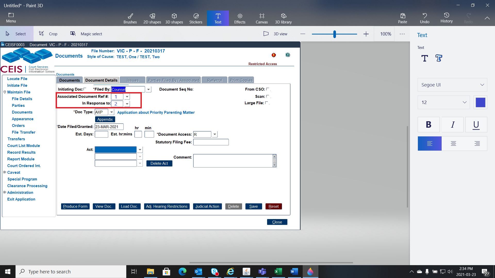
How to amend and delete
documents
Looking at the document screen, you can
Highlight the Document and select the Document
Detailstab, OR
Double click the Document which takes you directly to the
Document Details tab
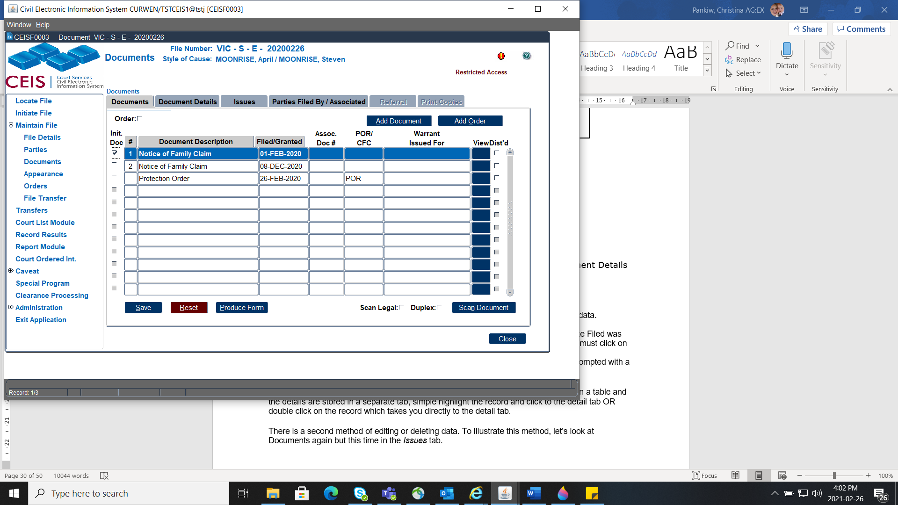
In the [DOCUMENTS Details tab],
any information can be edited.
If the Date Filed or Document Code was initially entered incorrectly,
simply overwrite the date or code with the correct information. You must
click on the Save button to save your changes.
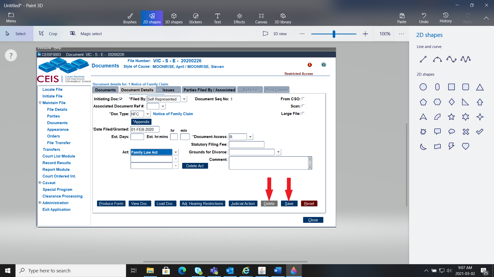
If you want to delete a document,
simply click on the DELETE button. You will be prompted with a message
to confirm the deletion.
The record may not allow you to delete if you have data tied to this
document such as Issues and Parties Filed By.
If this is the case, go through each screen and remove the data
entered, then come back to the Document Details Tab,
and click DELETE.
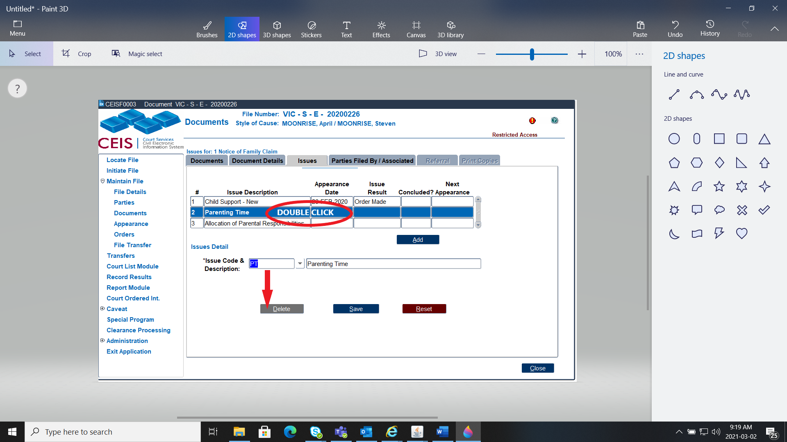
To delete Issues, place the blue
line on the Issue you are deleting (or changing) and double click to
pull it down to the bottom screen then click DELETE and SAVE.
NOTE – Once you start using CEIS, you may start wondering
why a double click is necessary to select records. This design was
intended to give users the optimal system performance so that CEIS did
not respond slowly.
Document List Report
A Report to generate a list of the documents filed and entered in
CEIS for all levels and classes.
STEPS:
Whenever you need to a print a list of documents that have been
filed, either for the file itself, counsel, a party etc. We have created
a super easy to read and producible list.
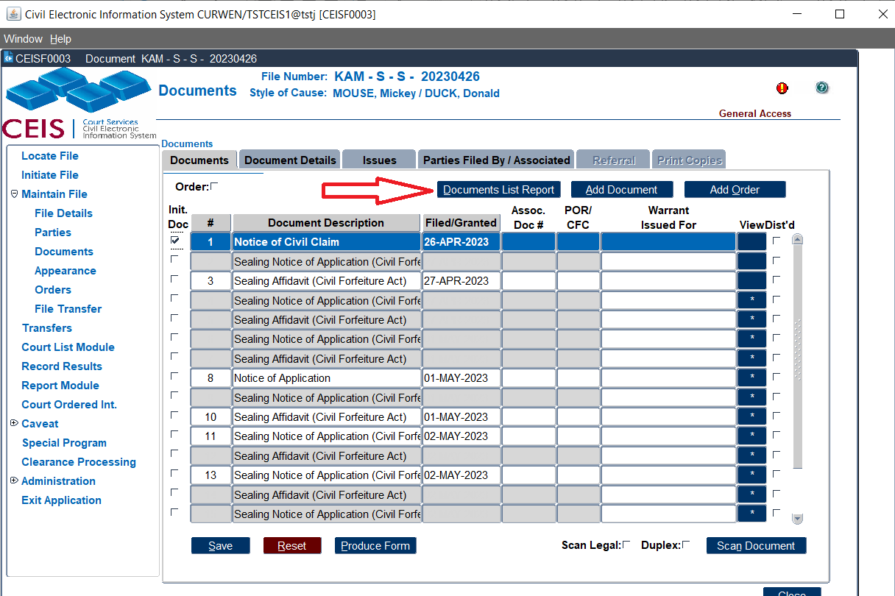
Simply
click on Documents to bring you into a file and at the top you will see
a new button called “Document List Report”
Click on that, and a report will be generated.
NOTE: You will notice that if there is a document with a Sealed
Access level, those documents will not be listed. If the file itself is
sealed, this report will not be functional.
How to enter Affidavits
At the request of the Judiciary, we have added extra fields in the
Document Details screen when any Affidavit it filed.
As of March 24, 2021 the Sworn By is mandatory, and the Affidavit is
option. In the previously data entered Affidavits (before March 24 2021)
this field will populate but is NOT mandatory – it is recommended that
if the Affidavit is going into court that these fields are filled in to
assist our Judiciary.
STEPS:
Add Document
Enter Document Type (Any Affidavit Code)
Type in the full name of who SWORE or AFFIRMED the Affidavit
(mandatory field after March 24, 2021) – NOT the Commissioners name,
and
If known, enter the number of the Affidavit (this is
optional)
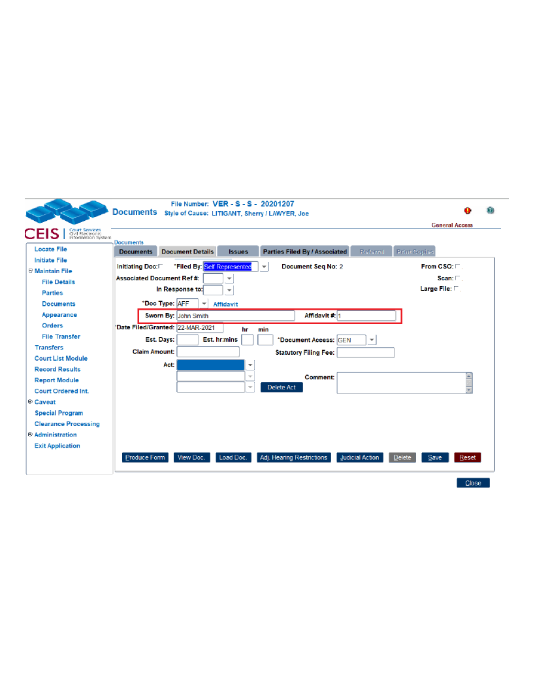
Child Support
Recalculation Service Procedure
As outlined the ADM
Memo dated February 23, 2022 the Child Support Recalculation Service
(CSRS) is expanding from its pilot location, Kelowna, to the rest of the
province, effective March 1, 2022. There are some changes that accompany
this expansion, specifically related to CEIS.
When a file is enrolled
Kelowna’s pilot was mandatory enrolment if a child support order was
made. The expansion to the province is moving in a different
direction.
Enrolment in the Child Support Recalculation Service (CSRS) is
either:
By Consent, or
By Order of the Court
If the Court Orders the file be enrolled in the CSRS, the
registry will email a copy of the Order directly to the Child Support
Recalculation Service via CEIS:
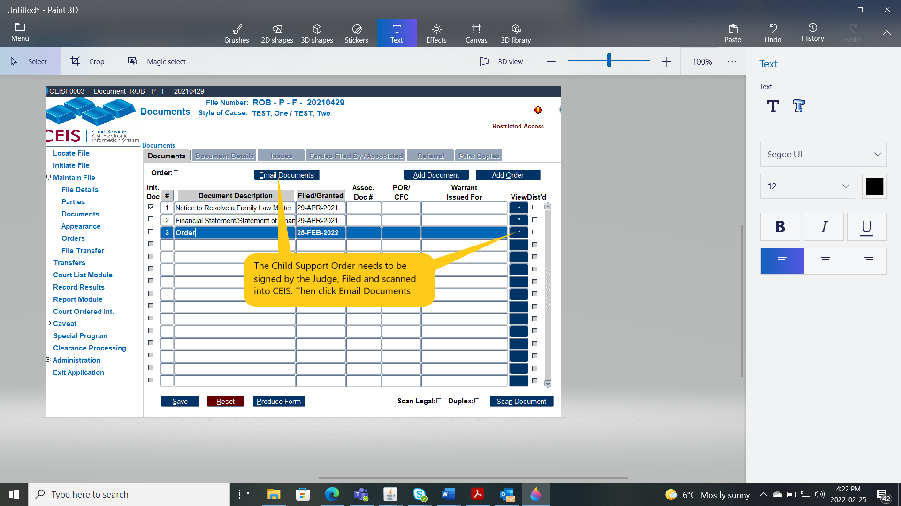
Graphical user interface, application
Description automatically generated
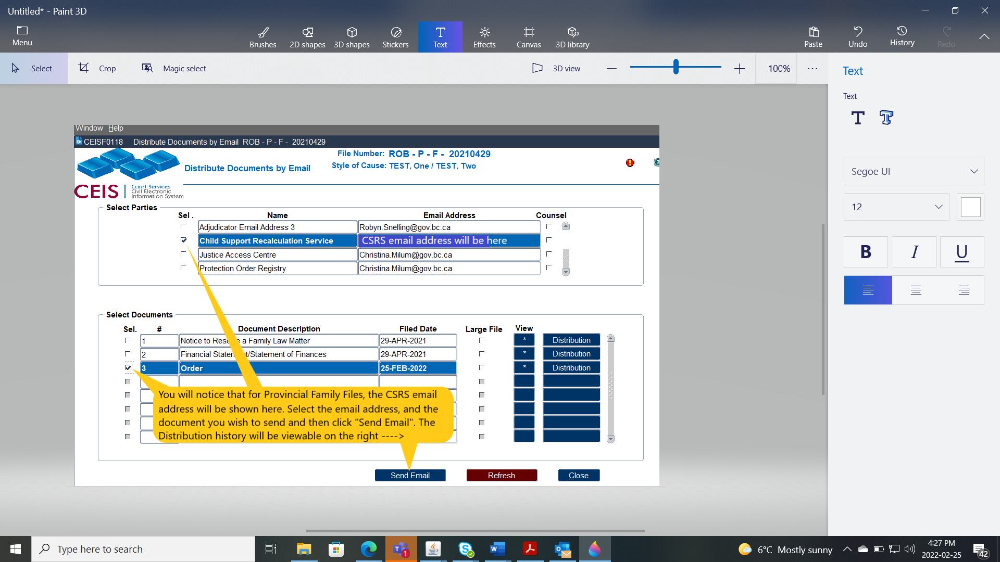
Graphical user interface, application
Description automatically generated
After either an Order of the Court is provided or a voluntary
enrolment package is provided to the Child Support Recalculation
Service, they will provide the local registry a Notice of
Enrolment (CEIS Code: NOE).
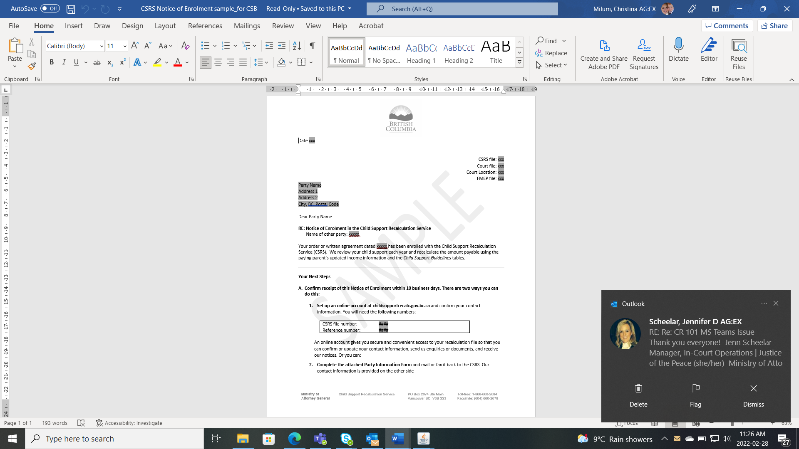
Graphical user interface, application,
Word Description automatically generated
Once that Notice if received, we need to navigate to the File
Details Tab and enter the enrolment date and reason why they
were enrolled under Special Programs.
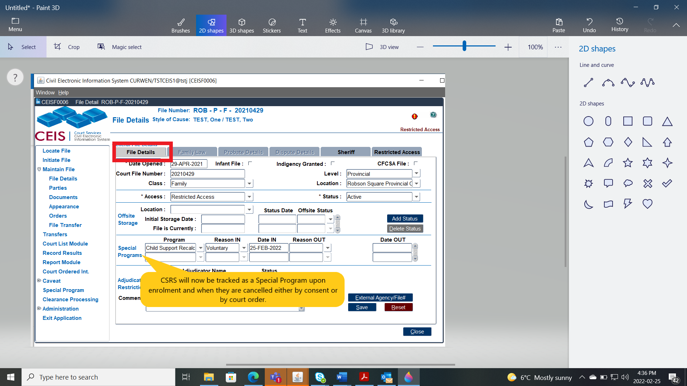
Graphical user interface, application
Description automatically generated
When a file is removed from the Child Support Recalculation
Service
Parties may choose to remove themselves by consent by filing a
Withdrawn from Child Support Recalculation Service Document (CEIS CODE:
NWCS) or by Order of the Court.
When this happens, go back to the File Details Screen and select the
Reason Out and enter the Date Out
according to the documents filed.
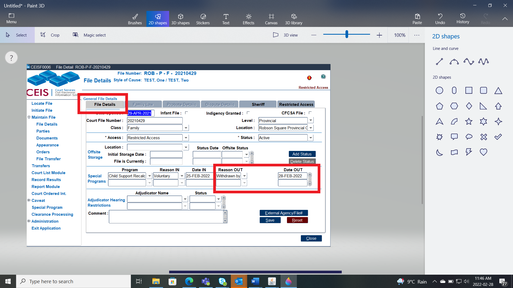
A screenshot of a computer Description
automatically generated
New Codes for CSRS
Name of Document
CEIS Code
New (Y/N)
Notice of Enrolment (CSRS)
NOE
Y
Statement of Recalculation
SRO
N
Amended Statement of Recalculation
SRO
N
Recalculation Suspension Notice
RSN
Y
Recalculation Suspension Ending
Notice
RSEN
Y
Withdrawn from Child Support Recalculation
Service
NWCS
Y
Child Support Recalculation Declined
CSRD
Y
Child Support Recalculation Voided
CSRV
Y
Special Program Name
CEIS Code
New (Y/N)
Child Support Recalculation Service
CSRS
Y
Special Program
Entry
CEIS Code
New (Y/N)
Voluntary
VOL
N
Mandatory
MAN
N
Special Program Exit
CEIS Code
New (Y/N)
Withdrawn by Consent
WCON
Y
Order removing CSRS
RORD
Y
Civil Forfeiture Act
Procedure
The Civil Forfeiture Office has modified their Notice of Applications
to assist us in recognizing these special situations.
They’ve made the following changes that you will need to look
for:
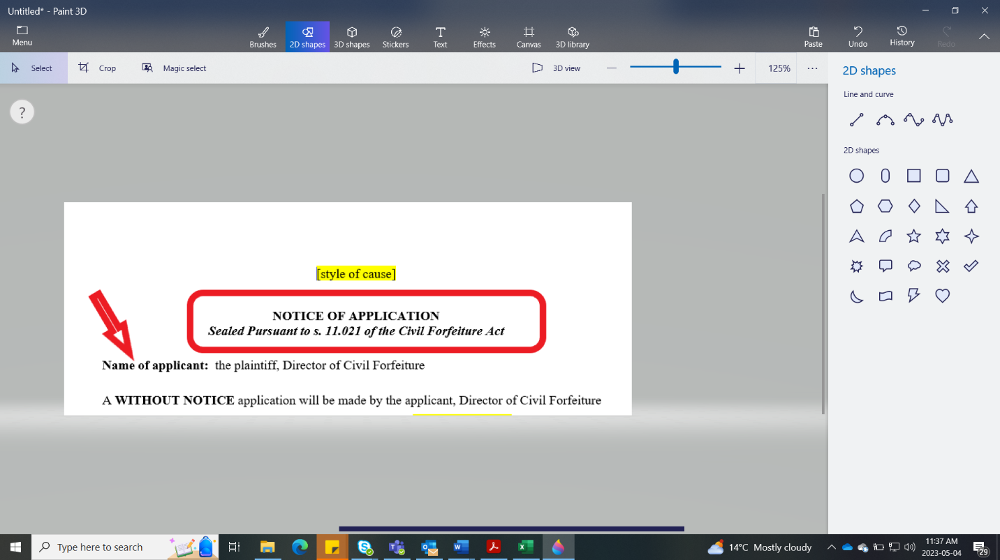
Graphical user interface, application,
Word Description automatically generated
Added ‘Sealed Pursuant to ss. 13 and 14 (previously ss. 11.01 and
11.02) of the Civil Forfeiture Act’ under the title Notice of
Application; and you will notice the Plaintiff is the Director of Civil
Forfeiture.
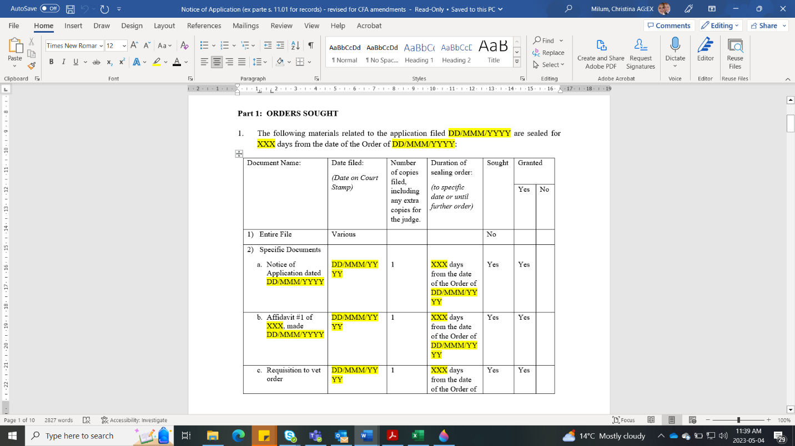
Graphical user interface, application
Description automatically generated
The sealing order language is included under the Orders Sought.
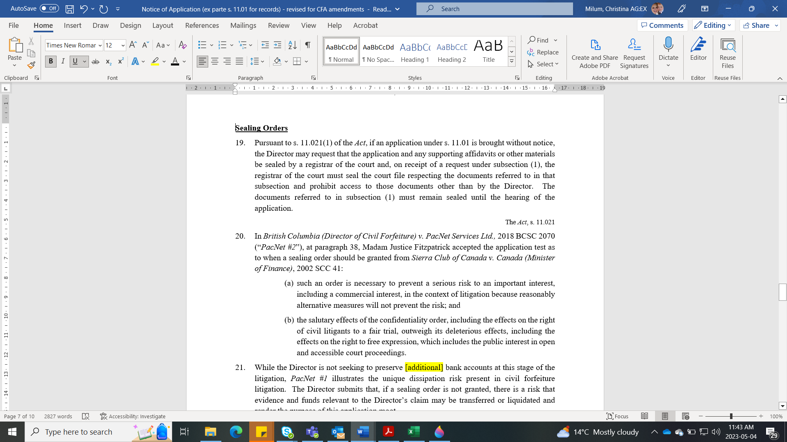
Graphical user interface, application,
Word Description automatically generated
Added a new paragraph 19 under the ‘Sealing Orders’ heading of the
Legal Basis.
STEPS WHEN A SEALING NOTICE OF APPLICATION AND SUPPORTING
MATERIAL IS FILED (VIA E-FILING OR OVER THE COUNTER):
Review the Notice of Application and identify if this is a
Sealing Application or not (see the above outlined indicators)
If you see any of the indicators;
in e-filing confirm the correct “SNAP/SAFF” codes are
used,
when data entering manually confirm that you use the correct
SNAP/SAFF codes.
Confirm you are in the correct level and class – Supreme Civil
(General)
Enter the correct Act – Civil Forfeiture Act
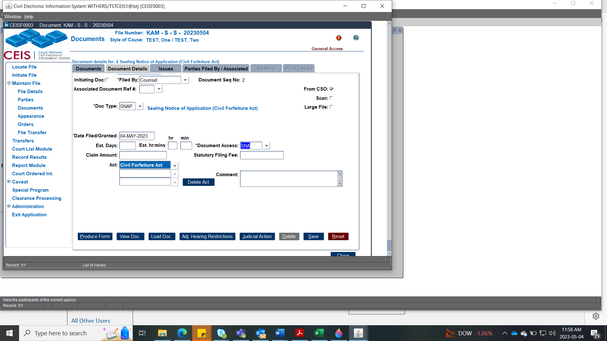
A screenshot of a computer Description
automatically generated
After these codes are entered into CEIS, the Document(s) will auto
seal to the new Access Level SNA.
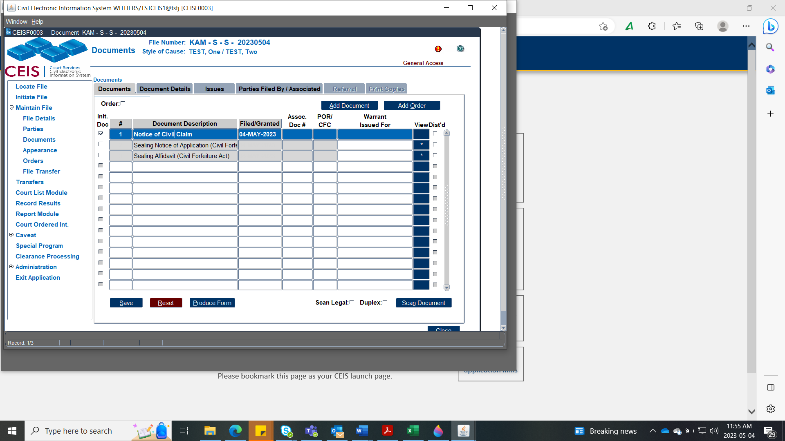
Graphical user interface, application
Description automatically generated
Once the court speaks to this Application (SNAP) they should
indicate whether these documents are to remain sealed, or if your local
DDR needs to unseal these documents.
HOW TO UNSEAL THE SNAP/SAFF DOCUMENTS:
Once the Court has heard the file and these 2 documents (SNAP and
SAFF) are no longer needing to be Sealed:
Enter into the file
Go to Documents
Click on Document Details of the SNAP/SAFF
Navigate to the Access Level and change the SNA to GEN and
save.
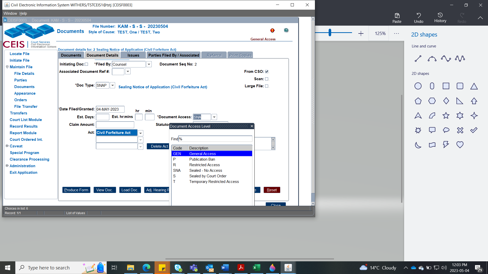
Graphical user interface, application
Description automatically generated
Confirm the document is now unsealed
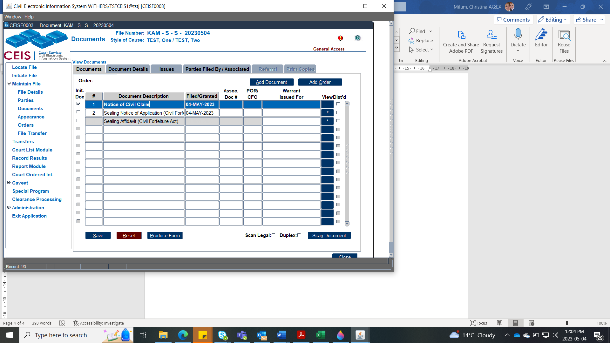
Graphical user interface, application,
table, Word Description automatically generated
UNEXPLAINED WEALTH ORDERS:
This is a new issue type that we may see on Notice of Applications
(sealing or not) from the Civil Forfeiture Office.
If you notice this in the Orders sought, please use the new code
UWO.
For further information on why we are sealing these applications and
what the new issue code Unexplained Wealth Order means, please refer to
the ADM Memo outlining the background or reach out to AskPolicy.
C78- French Divorce
Proceedings
Initiating a Divorce file is the same process as a regular Divorce
Act file.
Things change when a party wishes to file and/or proceed in the
French Language. New features will appear when the RFOL code is added as
a document in CEIS.
Follow along on this
document that outlines all the unique features when working in
French Divorce Files.
Intimate Images Protection
Act (IIPA)
Per this ADM
Memo, we have a few new specific requirements in our data entry into
CEIS when accepting enforcement orders from the CRT into Provincial
Small Claims regarding the Intimate Images Protection Act.
Access Level:
There is a change in the Court Record Access Policy, therefore, in
the File Details screen, we need to change the Access Level from General
to Restricted.
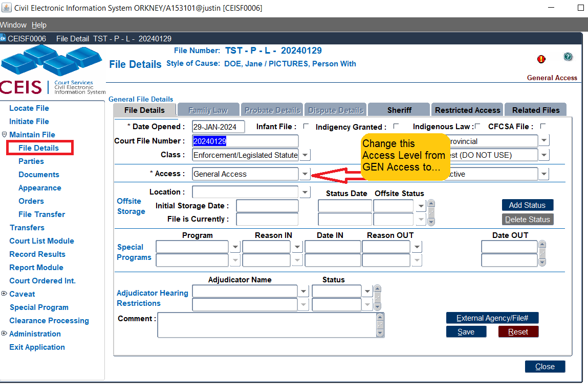
A screenshot of a computer Description
automatically generated
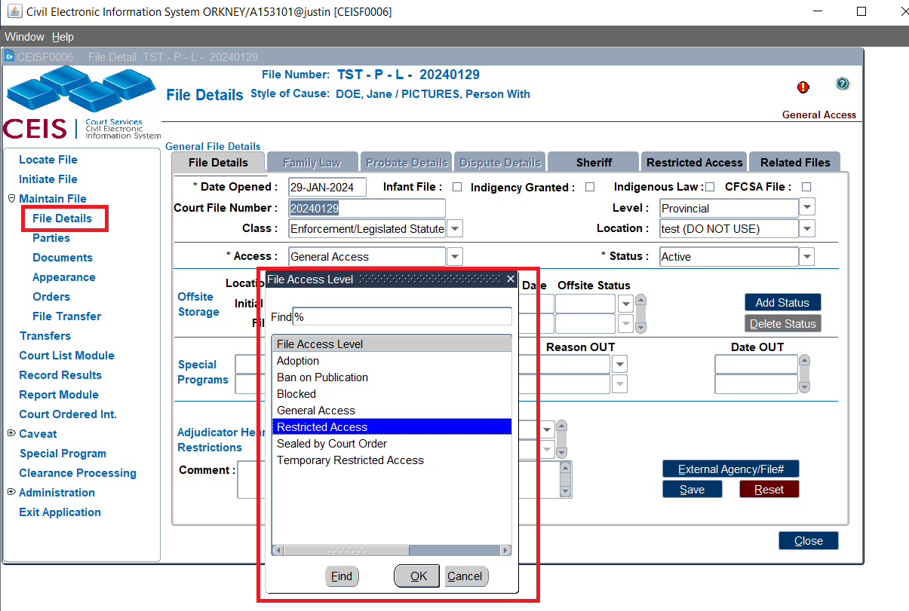
A screenshot of a computer Description
automatically generated
Act:
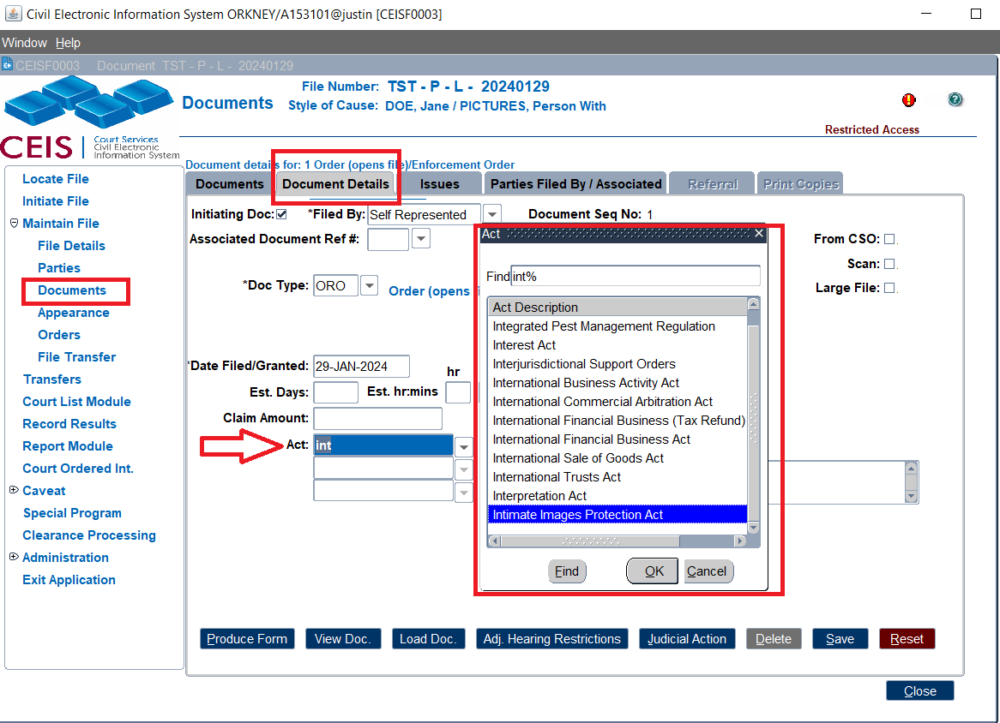
We
also need to ensure the Act we enter in Document Details is the Intimate
Images Protection Act.
Entering the Restriction Access level and the ACT will apply proper
backend coding to ensure the file is NOT Viewable in CSO.
Failing to enter these, will allow the file to be viewable … and
that’s a big no no.
Publication Ban:
If the CRT orders a Publication Ban, we are
automatically adding this into CEIS, per the new Provincial
Court Access Policy under section 13 of the Intimate Images
Protection Act (IIPA).
IIPA clues on the CRT Order to look for:
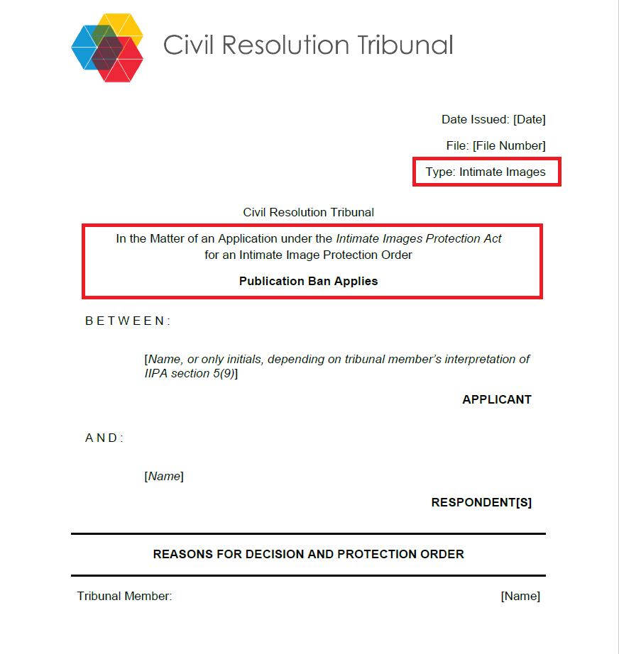
A document with red box and text
Description automatically generated